Stabilizer Codes¶
Introduction¶
QuaEC includes a class, qecc.StabilizerCode, that represents error-correcting codes specified using the stabilizer formalism. To construct a stabilizer code in QuaEC, the generators of a stabilizer group must be specified along with a particular assignment of logical operators acting on states encoded in the stabilizer code.
>>> import qecc as q
>>> stab = q.StabilizerCode(['ZZI', 'IZZ'], ['XXX'], ['ZZZ'])
>>> print stab
S = <i^0 ZZI, i^0 IZZ>
Xbars = PauliList(i^0 XXX)
Zbars = PauliList(i^0 ZZZ)
For convienence, several static methods are provided to create instances for well-known stabilizer codes.
>>> stab = q.perfect_5q_code()
>>> print stab
S = <i^0 XZZXI, i^0 IXZZX, i^0 XIXZZ, i^0 ZXIXZ>
Xbars = PauliList(i^0 XXXXX)
Zbars = PauliList(i^0 ZZZZZ)
Once constructed, an instance of qecc.StabilizerCode exposes properties that describe the number of physical and logical qubits, as well as the distance of the code. (Please note that calculating the distance can be extremely slow for large codes.)
>>> print (stab.nq, stab.nq_logical, stab.distance)
(5, 1, 3)
Encoders and decoders for stabilizer codes can be found in a straightforward manner using qecc.StabilizerCode.
>>> enc = stab.encoding_cliffords().next()
>>> print enc
X[0] |-> +X[0] X[1] X[2] X[3] X[4]
X[1] |-> +X[0] X[2] X[3] X[4]
X[2] |-> +X[1] X[2]
X[3] |-> +Y[0] X[1] X[3] Y[4]
X[4] |-> +X[0] X[1] Y[3] Y[4]
Z[0] |-> +Z[0] Z[1] Z[2] Z[3] Z[4]
Z[1] |-> +X[0] Z[1] Z[2] X[3]
Z[2] |-> +X[1] Z[2] Z[3] X[4]
Z[3] |-> +X[0] X[2] Z[3] Z[4]
Z[4] |-> +Z[0] X[1] X[3] Z[4]
>>> print enc.inv()
X[0] |-> +X[0] Z[3] X[4]
X[1] |-> +X[0] X[1]
X[2] |-> +X[0] X[1] X[2]
X[3] |-> +X[0] X[2] X[3] Z[4]
X[4] |-> +X[0] Y[3] Y[4]
Z[0] |-> +Z[0] Y[1] Y[3] Z[4]
Z[1] |-> +Z[0] Y[2] Z[3] Y[4]
Z[2] |-> +Z[0] Z[1] Z[2] X[3]
Z[3] |-> +Z[0] Y[1] Z[3] Y[4]
Z[4] |-> +Z[0] Z[1] X[2] Z[3] Z[4]
Stabilizer codes may be combined by the tensor product (reprsented in QuaEC by &), or by concatenation:
>>> print stab & stab
S = <i^0 X[0] Z[1] Z[2] X[3], i^0 X[1] Z[2] Z[3] X[4], i^0 X[0] X[2] Z[3] Z[4], i^0 Z[0] X[1] X[3] Z[4], i^0 X[5] Z[6] Z[7] X[8], i^0 X[6] Z[7] Z[8] X[9], i^0 X[5] X[7] Z[8] Z[9], i^0 Z[5] X[6] X[8] Z[9]>
Xbars = PauliList(i^0 XXXXXIIIII, i^0 IIIIIXXXXX)
Zbars = PauliList(i^0 ZZZZZIIIII, i^0 IIIIIZZZZZ)
>>> print q.StabilizerCode.bit_flip_code(1).concatenate(q.StabilizerCode.phase_flip_code(1))
S = <i^0 Z[0] Z[1], i^0 Z[1] Z[2], i^0 Z[3] Z[4], i^0 Z[4] Z[5], i^0 Z[6] Z[7], i^0 Z[7] Z[8], i^0 X[0] X[1] X[2] X[3] X[4] X[5], i^0 X[3] X[4] X[5] X[6] X[7] X[8]>
Xbars = PauliList(i^0 XXXXXXXXX)
Zbars = PauliList(i^0 ZZZZZZZZZ)
Class Reference¶
qecc.StabilizerCode¶
- class qecc.StabilizerCode(group_generators, logical_xs, logical_zs)¶
Class representing a stabilizer code specified by the generators of its stabilizer group and by representatives for the logical operators acting on the code.
Parameters: - group_generators – Generators
 such that the stabilizer
group
such that the stabilizer
group  of the represented code is given by
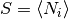.
of the represented code is given by
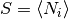. - logical_xs – Representatives for the logical
 operators
acting on encoded states.
operators
acting on encoded states. - logical_zs – Representatives for the logical
 operators
acting on encoded states.
operators
acting on encoded states.
- nq¶
The number of physical qubits into which this code encodes data.
- n_constraints¶
The number of stabilizer constraints on valid codewords.
- nq_logical¶
The number of logical qubits admitted by this code.
- logical_ys¶
- distance¶
The distance of this code, defined by 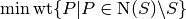, where
is the stabilizer group
for this code.Warning: this property is currently very slow to compute.
- n_correctable¶
The number of errors
 correctable by this code, defined by
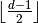, where
correctable by this code, defined by
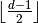, where  is
the distance of the code, given by the distance property.
is
the distance of the code, given by the distance property.
- stabilizer_group(coset_rep=None)¶
Iterator onto all elements of the stabilizer group
describing
this code, or onto a coset 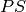 of the stabilizer group.Parameters: coset_rep (qecc.Pauli) – A Pauli operator  , so that the
iterated coset is . If not specified, defaults to the
identity.
, so that the
iterated coset is . If not specified, defaults to the
identity.Yields : All elements of the coset of the stabilizer group .
- logical_pauli_group(incl_identity=True)¶
Iterator onto the group 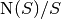, where
is
the stabilizer group describing this code. Each member of the group
is specified by a coset representative drawn from the respective
elements of . These representatives are
chosen to be the logical and operators specified
as properties of this instance.Parameters: incl_identity (bool) – If False, the identity coset
is excluded from this iterator.Yields : A representative for each element of .
- normalizer_group(mod_s=False)¶
Returns all elements of the normalizer of the stabilizer group. If mod_s is True, returns the set 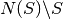.
- encoding_cliffords()¶
Returns an iterator onto all Clifford operators that encode into this stabilizer code, starting from an input register such that the state to be encoded is a state of the first
 qubits, and such that the
rest of the qubits in the input register are initialized to
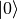.
qubits, and such that the
rest of the qubits in the input register are initialized to
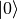.Yields : instances C of qecc.Clifford such that C(q.StabilizerCode.unencoded_state(k, n - k)) equals this code.
- star_decoder(for_enc=None, as_dict=False)¶
Returns a tuple of a decoding Clifford and a qecc.PauliList specifying the recovery operation to perform as a function of the result of a
 measurement on the ancilla register.
measurement on the ancilla register.For syndromes corresponding to errors of weight greater than the distance, the relevant element of the recovery list will be set to qecc.Unspecified.
Parameters: - for_enc – If not None, specifies to use a given Clifford operator as the encoder, instead of the first element yielded by encoding_cliffords().
- as_dict (bool) – If True, returns a dictionary from recovery operators to syndromes that indicate that recovery.
- minimize_distance_from(other, quiet=True)¶
Reorders the stabilizer group generators of this code to minimize the Hamming distance with the group generators of another code, using a greedy heuristic algorithm.
- block_logical_pauli(P)¶
Given a Pauli operator
acting on , finds a Pauli
operator 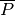 on 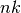 qubits that corresponds
to the logical operator acting across blocks of this code.Note that this method is only supported for single logical qubit codes.
- mabuchi_operators(stab_code, known_operators=[])¶
Given a stabilizer code, this function yields Pauli operators that satisfy all possible commutation relations with the stabilizer group generators. This is a strict superset of the detectable errors. To increase the speed of this function, the keyword argument “known_operators” allows the input of the detectable errors themselves.
- concatenate(other)¶
Returns the stabilizer for a concatenated code, given the stabilizers for two codes. At this point, it only works for two
 codes.
codes.
- static ancilla_register(nq=1)¶
Creates an instance of qecc.StabilizerCode representing an ancilla register of nq qubits, initialized in the state 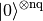.
Return type: qecc.StabilizerCode
- static unencoded_state(nq_logical=1, nq_ancilla=0)¶
Creates an instance of qecc.StabilizerCode representing an unencoded register of nq_logical qubits tensored with an ancilla register of nq_ancilla qubits.
Parameters: nq_logical (int) – Number of qubits to Return type: qecc.StabilizerCode
- static flip_code(n_correctable, stab_kind=i^0 Z)¶
Creates an instance of qecc.StabilizerCode representing a code that protects against weight-n_correctable flip errors of a single kind.
This method generalizes the bit-flip and phase-flip codes, corresponding to stab_kind=qecc.Z and stab_kind=qecc.X, respectively.
Parameters: - n_correctable (int) – Maximum weight of the errors that can be corrected by this code.
- stab_kind (qecc.Pauli) – Single-qubit Pauli operator specifying which kind of operators to use for the new stabilizer code.
Return type: qecc.StabilizerCode
- static bit_flip_code(n_correctable)¶
Creates an instance of qecc.StabilizerCode representing a code that protects against weight-n_correctable bit-flip errors.
Parameters: n_correctable (int) – Maximum weight of the bit-flip errors that can be corrected by this code. Return type: qecc.StabilizerCode
- static phase_flip_code(n_correctable)¶
Creates an instance of qecc.StabilizerCode representing a code that protects against weight-n_correctable phase-flip errors.
Parameters: n_correctable (int) – Maximum weight of the phase-flip errors that can be corrected by this code. Return type: qecc.StabilizerCode
- static perfect_5q_code()¶
Creates an instance of qecc.StabilizerCode representing the 5-qubit perfect code.
Return type: qecc.StabilizerCode
- static steane_code()¶
Creates an instance of qecc.StabilizerCode representing the 7-qubit Steane code.
Return type: qecc.StabilizerCode
- static shor_code()¶
Creates an instance of qecc.StabilizerCode representing the 9-qubit Shor code.
Return type: qecc.StabilizerCode
- static css_code(C1, C2)¶
Not yet implemented.
- static reed_muller_code(r, t)¶
Not yet implemented.
- static reed_solomon_code(r, t)¶
Not yet implemented.
- group_generators – Generators